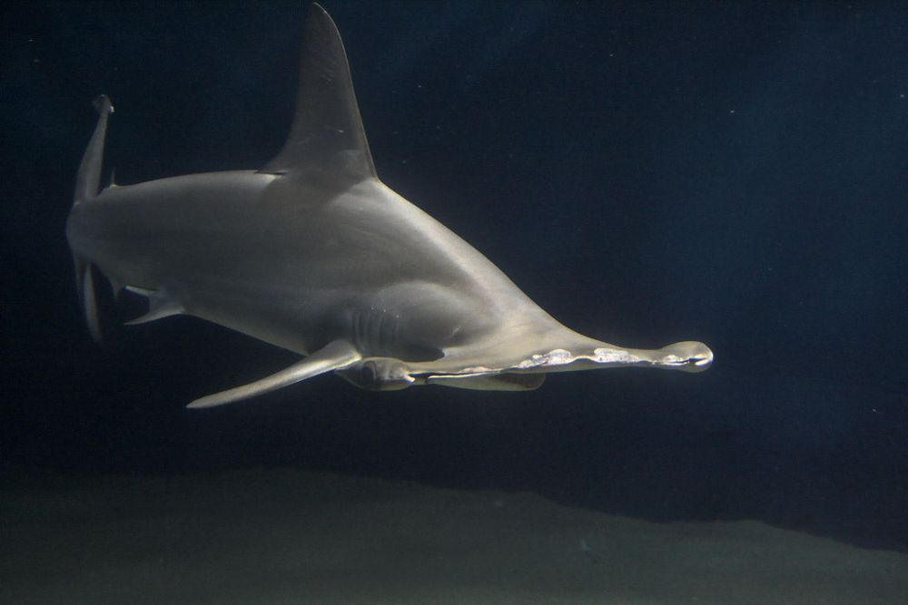
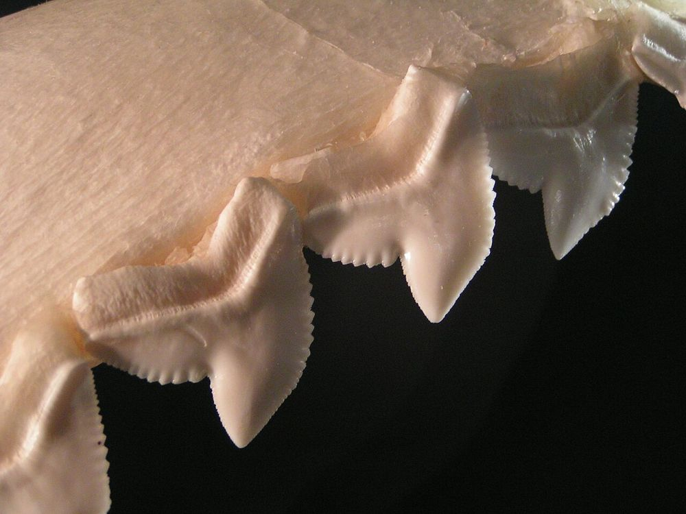

1Zaman çizelgesini kafamızda canlandıralım
Dünya'nın tarihi o kadar uzundur ki rakamlar akılda kalmaz. Bu yüzden karşılaştırmalar yardımcı olur. Köpekbalıkları ile ağaçlar arasındaki karşılaştırma bunlardan en şaşırtıcısıdır.
Köpekbalıklarının bilinen en eski izleri, fosilleşmiş pulları ve dişleri, 400 milyon yılın da ötesine uzanıyor. Bazı araştırmacılar ilk köpekbalığı benzeri balıkların 450 milyon yıl kadar önce ortaya çıktığını düşünüyor.

2O zaman karada ne vardı?
Köpekbalıkları okyanuslarda yüzmeye başladığında karalar bugünkünden çok farklıydı. Karada yalnızca yosunlar, alçak bitkiler ve ilkel böcek benzeri canlılar vardı. Henüz orman yoktu.
İlk gerçek ağaçlar Devoniyen döneminde, yaklaşık 385 milyon yıl önce ortaya çıktı. Archaeopteris bu ilk ağaçların en iyi bilinenlerinden biridir. Gövdesi ve dalları bugünkü ağaçlara benziyordu ama tohumla değil sporla çoğalıyordu.
3Dinozorları da gördüler
İlk dinozorlar yaklaşık 230 milyon yıl önce ortaya çıktı. Yani köpekbalıkları dinozorlardan 150 milyon yıldan daha uzun süre önce okyanuslardaydı. 66 milyon yıl önce dinozorların çoğunu yok eden büyük göktaşı felaketinden sonra da yaşamaya devam ettiler.
Köpekbalıkları bu uzun sürede birçok kitlesel yok oluşu atlattı. Bunun bir sebebi, çok farklı ortamlara uyum sağlayabilen çeşitli türlere ayrılmalarıdır.

4Bugünkü köpekbalıkları
Bugün 500'den fazla köpekbalığı türü var. Bunlar 20 cm'lik küçük fener köpekbalıklarından, 12 metreyi aşabilen balina köpekbalığına kadar uzanıyor. Balina köpekbalığı dünyanın en büyük balığıdır ve planktonla beslenir.
Ne yazık ki bugün köpekbalıklarının birçok türü aşırı avlanma yüzünden tehlike altında. 400 milyon yıldır hayatta kalan bu canlılar, insanların etkisiyle ilk kez bu kadar hızlı azalıyor.
💡 Biliyor muydun?
- Köpekbalıklarının iskeleti kemikten değil, kulaklarımızdaki gibi kıkırdaktan oluşur. Bu yüzden fosilleri genellikle yalnızca dişleridir.
- Bazı köpekbalıkları ömürleri boyunca binlerce diş değiştirir. Kopan dişin yerine arkadan yenisi gelir.
- Grönland köpekbalığının yüzlerce yıl yaşayabildiği düşünülüyor. Bilinen en uzun yaşayan omurgalılardan biridir.
✅ Kaynaklar
📷 Görseller
- Kapak: Pterantula (Terry Goss) at en.wikipedia · CC BY 2.5 · Wikimedia Commons
- Bir çekiç başlı köpekbalığı: suneko · CC BY 2.0 · Wikimedia Commons
- Kaplan köpekbalığının testere gibi tırtıklı dişleri: User:Stefan Kühn · CC BY-SA 3.0 · Wikimedia Commons